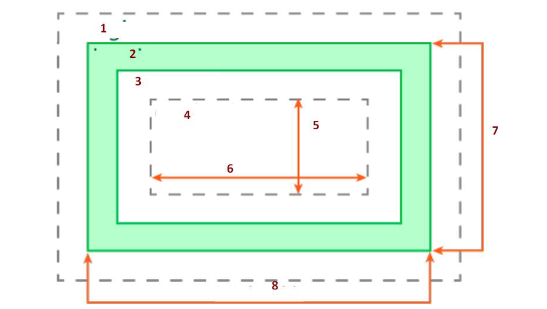

Ejercicio 1. Crea un documento htm en el que pongas los tres tipos de insertar css (linea,
incrustado, link y @import) para poner los h1 en rojo , h2 en verde y p en azul
Inserción CSS en línea
CSS incrustado
Link a hoja de estilo
Fichero css importado
Ejercicio 2. Incrusta esta imagen en la pagina y Crea esta tabla en css con los conceptos

| 1 |
2 |
3 |
4 |
5 |
6 |
7 |
8 |
| margin |
border |
padding |
content |
height |
width |
total height |
total width |
Ejercicio 3. Copia esta tabla en el html. Señala verdadero o falso
| Afirmación |
Verdadero / Falso |
| El content va fuera del padding |
Falso |
| El padding va dentro del margin |
Verdadero |
| El border va dentro del margin y el padding |
Falso |
| El margin va entre el padding y el content |
Falso |
| El border va fuera del padding |
Verdadero |
| width total = width + padding left right + borders r l |
Verdadero |
| width total = height + paddings + borders + margins |
Falso |
Ejercicio 4. Usa el anterior ejemplo. Crea un CSS que muestre la estructura y herencia y
especificidad del selector y orden de las reglas. Se debe ver estas prioridades
Ejercicio 5. Inserta Comentarios en el anterior para ver que tiene mas o menos prioridad
Ejercicio 6. Crea los siguientes bordes usando css puedes usar esta estructura
Bordes 1.
Bordes 2.
Bordes 3. dashed
Bordes 4. ridge
Bordes 5. dotted
Bordes 6. dashed
Bordes 7. outset
Bordes 8. 7px inset
Bordes 9. 10px groove
Ejercicio 7. Modifica el anterior ejercicio para que los ejercicios 1 a 4 queden con estos margenes
(usa auto)
- Borde1: alineado al centro
- Borde2: alineado a la derecha
- Borde3: alineado a la izquierda
- Borde4: a 100px de la izquierda
Bordes 1.
Bordes 2.
Bordes 3. dashed
Bordes 4. ridge
Ejercicio 8. Modifica el anterior ejercicio para que los ejercicios 1 a 4 queden con estos paddings
- Borde5: padding todos 20px
- Borde6: padding verticales 40px horizontales 100px
- Borde7: paddings 10 20 30 40px
Bordes 5. dotted
Bordes 6. dashed
Bordes 7. outset
Ejercicio 9. Modifica el ejemplo de @media para crear un estilo diferente cuando sea movil, por
pantalla y para imprimir.
En pantalla el p debe verse verde movil el p debe verse rojo y en print debe verse azul.